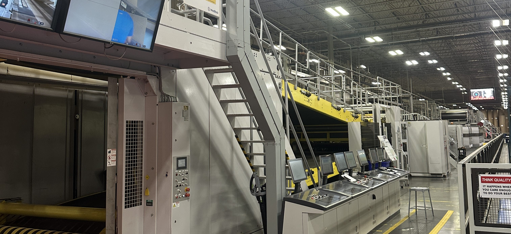

Designed, fabricated, and programmed an autonomous robot for Georgia Tech's ME 2110 competition. Our team placed 2nd overall out of 70+ teams, with the robot completing five mechanical tasks in under 40 seconds.
Key Contributions
- Integrated Arduino-based mechatronic control with custom modular subsystems for reliable autonomous operation
- Applied DFM/DFA and FMEA principles to optimize subsystem reliability and assembly efficiency
- Utilized iterative prototyping with CAD, digital fabrication, 3D printing, and laser cutting
- Designed mechanical systems under tight time constraints with focus on repeatability
CAD
Arduino
Mechatronics
DFM/DFA
FMEA
3D Printing
Leading early-stage fabrication readiness planning for an FAA-compliant RV-14 aircraft build. Responsible for coordinating cross-functional teams and establishing build processes from the ground up.
Key Contributions
- Developed and owned fabrication readiness plan defining part sourcing, BOM, kitting approach, and build sequencing
- Coordinated structures, systems, and logistics teams to track part readiness and standardize procedures
- Resolved early supply and process constraints to improve build flow and reduce rework risk
- Established documentation standards for repeatable, quality-controlled assembly
Process Planning
BOM Management
Cross-Functional Coordination
Quality Control

Led process and mechanical engineering analysis across corrugated manufacturing systems, identifying opportunities for significant cost savings and operational improvements.
Key Contributions
- Projected $275K in annual savings through waste reduction and equipment utilization improvements
- Developed data-driven inventory optimization system using Oracle JD Edwards API integration
- Reduced excess stock in a $13.52M inventory by 23% while supporting continuous operations
- Integrated lean manufacturing and 5S practices to improve machine uptime
Lean Manufacturing
Process Analysis
Data Analytics
Inventory Optimization
5S